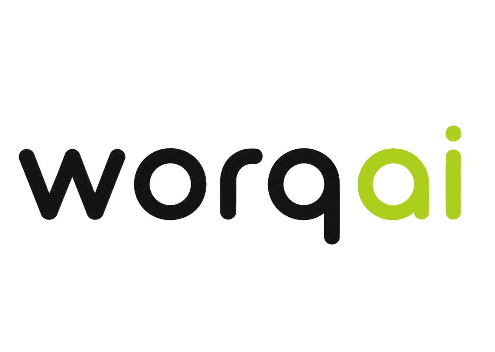

Y la pregunta que te persigue: "¿qué estoy haciendo mal?"
Nadie te rechazó.
Nadie te leyó.
El filtro te descartó sin llegar a un humano.
Los que consiguen entrevistas no tienen mejor experiencia que tú.
Tienen un CV distinto para cada vacante.
Escrito en el idioma que el filtro entiende.
Las empresas usan bots para descartarte.
Nosotros invertimos el proceso.
WorqAI reconstruye tu CV con todo lo que el bot busca.
Ellos tienen un algoritmo. Ahora tú también.

TE DESCARTARON EN SEGUNDOS.
Sin siquiera llegar a un humano.
Así que les copiamos el filtro ylo pusimos de tu lado.
Con WorqAI podés adaptar tu CV a cualquier vacante en segundos.
Analiza mi CV gratis→
Rápido
·
Seguro
·
Preciso
worqai.io · español e inglés
Así te lee el filtro.El software que las empresas usan para descartar candidatos — antes de que un humano vea tu CV.
10.6× más entrevistas. Solo por adaptar el CV a cada vacante.
Analista de Seguridad
Puntuación 92
DESCARTADO
Andres Quesada R.
Especialista en Servicio al Cliente · Bilingüe EN/ES
andres.quesada@email.com · Parrita, Costa Rica linkedin.com/in/andresq
Resumen
Estudiante de TI bilingüe (EN/ES, B2+) con experiencia en servicio al cliente, seguridad y análisis de datos. Certificado en Data Analytics (Excel, SQL, Tableau).
✗ palabras clave: 4 de 12
Habilidades
✗ coincidencia con la vacante: baja
Experiencia
Monitor de Seguridad de Activos
Control y Monitoreo CYMSA · Puntarenas, CR · Dic 2023 - Abr 2024
Cuidaba la seguridad de las instalaciones del cliente y llevaba el control de quien entraba y salía.
✗ formato: ilegible para el bot
Recepcionista Bilingüe
Hotel Monte Campana · Dic 2016 - May 2018
Atendí la recepción del hotel y ayudé a huéspedes nacionales e internacionales con sus necesidades.
✗ experiencia relevante: no detectada
Asistente Administrativo
TechValle Soluciones · Feb 2018 - Nov 2019
Apoyaba con tareas de oficina y archivado de documentos para el equipo administrativo.
✗ candidato no priorizado
> leyendo keywords de la vacante...
> reordenando por relevancia...
> reescribiendo con evidencia real...
Esto es lo que hacen los que sí consiguen entrevista.